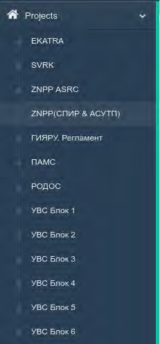
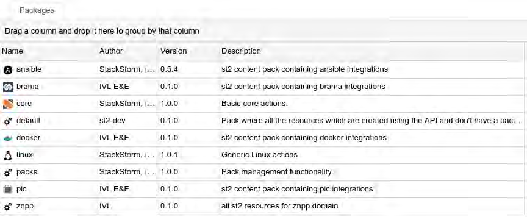

# Приложение B
Web-приложение Brama предназначено для организации человеко-машинного интерфейса с административным ПО системы.
Внешний вид главной экранной формы Web-приложения Brama показан на рисунке Б.1.
На главной экранной форме отображаются все доступные пользователю проекты.
Слева отображается меню навигации по компонентам Brama.
Рисунок Б.1 – Внешний вид главной экранной формы Web-приложения Brama
При нажатии на пункт меню Projects открывается список доступных проектов:

Рисунок Б.2 – Список доступных проектов
При нажатии на пункт меню Controls открывается список элементов управления Brama:
Рисунок Б.3 – Элементы управления Brama
Назначение элементов управления: * Netra – управление всеми docker-контейнерами * Users – управление пользователями * Workflow – управление StackStorm.
При выборе одного из доступных проектов на экране отображается окно проекта:
Рисунок Б.4 – Окно проекта РОДОС
На верхней панели меню окна проекта расположено три кнопки (Compile, Compileall, Clean), которые позволяют: * Compile – выполнить компиляцию необходимых задач * Compile all – выполнить компиляцию всех задач * Clean – удалить все результаты компиляции проекта.
Для перемещения между экранами проекта используется меню Views:
Рисунок Б.5 – Меню Views
На экране Mnemo screens проекта отображается список всех мнемосхем выбранного проекта:
Рисунок Б.6 – Окно Mnemo screens
Таблица на экране Mnemo screens разделена на столбцы: * Name – наименование мнемосхемы * Status – статус компиляции (успешно, с замечаниями, с ошибками) * Compilation date – дата и время компиляции * Compilation duration – длительность компиляции.
При нажатии на стрелку слева от наименования мнемосхемы открывается панель с вкладками, в которой находиться: * ссылка на скомпилированную мнемосхему * ссылки на исходные файлы мнемосхем * список замечаний и ошибок (при их наличии).
На экране Compilation subtasks в виде древа отображается список всех задач проекта:
Рисунок Б.7 – Окно Compilation subtasks
Таблица на экране Mnemo screens разделена на столбцы: * Name – наименование задачи * Status – статус задачи * Description – короткое описание задачи.
При нажатии правой кнопкой мыши на задаче, открывается контекстное меню, в котором можно выбрать действие для задачи: * Redo – выполнить выбранную задачу * Redo with deps – выполнить выбранную задачу и все задачи, от которых она зависит.
Рисунок Б.8 – Окно Process Points
Таблица на экране Process Points разделена на столбцы: * Label – метка параметра * Title – наименование параметра * Type – тип параметра * Array – наименование массива, к которому принадлежит параметр * Index – индекс параметра в массиве.
При нажатии на метку параметра (Label) осуществляется переход к более подробной информации о параметре.
Рисунок Б.9 – Окно Files
Рисунок Б.10 – Окно проекта EKATRA
Рисунок Б.11 – Экранная форма Users
Три кнопки в крайнем левом столбце таблицы: * Edit account – позволяет редактировать информацию пользователя (экранная форма редактирования информации пользователя показана на рисунке Б.4) * Delete account – позволяет удалить пользователя * Update apikey – позволяет обновить API ключ для StackStorm.
Рисунок Б.12 – Экранная форма редактирования информации пользователя
Переход между экранами осуществляется при помощи меню Views.
При нажатии на идентификатор (Id) открывается новая вкладка, в которой в виде древа отображается подробная информация о задаче, а также её лог (при наличии). При нажатии на стрелку слева от идентификатора открывается временной лог выполнения задачи.
При нажатии правой кнопкой мыши на строку таблицы открывается контекстное меню с пунктами: * details – выбор данного пункта соответвует нажатию на идентификатор (Id) (открывается новая вкладка, в которой в виде древа отображается подробная информация о задаче, а также её лог (при наличии)) * tail – текущий лог задачи * cancel – отмена выполнения задачи (присутствует только в том случае, если задача еще не завершена или не отменена).
Вид экрана History:

Рисунок Б.13 – Экран History
Таблица на экране History разделена на столбцы: * Status – статус задачи, для задач возможны следующие значения статуса:
- scheduled – запланирована на выполнение
- running – выполняется
- failed – выполнение завершено с ошибкой
- succeeded – завершен успешно
Рисунок Б.14 – Экран Traces
Таблица на экране Traces разделена на столбцы: * Id – идентификатор события * Trace tag – тип события * Start date – дата и время начала события.
При клике правой кнопкой мыши открывается контекстное меню с пунктом details, который дает доступ к более подробной информации про задачу:
Рисунок Б.15 – Экран Actions
Таблица на экране Actions разделена на столбцы: * Package – наименование пакета, к которому принадлежит задача * Name – наименование задачи, при нажатии дает доступ к более подробной информации про задачу * Runner type – тип задачи * Enabled – статус активна/неактивна для задачи * Description – короткое описание задачи.
Рисунок Б.16 – Экран Sensors
Таблица на экране Sensors разделена на столбцы: * Package – наименование пакета, к которому принадлежит сенсор * Name – наименование сенсора * Enabled – состояние сенсора активен/неактивен * Description – короткое описание сенсора.
При клике правой кнопкой мыши открывается контекстное меню с пунктом details, который дает доступ к более подробной информации про правило:
Рисунок Б.17 – Экран Rules
Таблица на экране Rules разделена на столбцы: * Package – наименование пакета, к которому принадлежит правило * Name – наименование правила, при нажатии дает доступ к более подробной информации про правило * Enabled – статус правила активен/неактивен * Trigger – наименование триггера, по которому срабатывает правило * Action – задача, которая будет выполнения при срабатывании правила * Description - краткое описание задачи.

Рисунок Б.18 – Экран Packages
Таблица на экране Packages разделена на столбцы: * Name – наименование пакета * Author – автор пакета * Version – версия пакета * Description – краткое описание пакета.

Рисунок Б.19 – Экран Keys
Таблица на экране Keys разделена на столбцы: * Name – наименование ключа * Value – значение ключа * Secret – отметка является ли скрытым ключ * Encrypted – отметка, является ли закодированным ключ * Scope – наименование системы * User – пользователь, который может изменять значение ключа * Expire Timestamp – дата и время истечения действия ключа (если время не указано, то ключ действует неорганично долго).
Для каждого из представленных ключей присутствует возможность его изменения.
При необходимости можно создать резервную копию текущих ключей (кнопка Backup keys), для того, чтобы загрузить ранее сохраненную резервную копию ключей необходимо нажать кнопку Load backup, чтобы загрузить список ключей, установленных по умолчанию, необходимо нажать кнопку Load defaults.
Рисунок Б.20 – Экран Api Keys
Таблица на экране Api Keys разделена на столбцы: * Key ID – идентификатор ключа * User – имя пользователя, на которого выдан ключ * Enabled – статус ключа активен/неактивен * Created_at – дата и время создания.
Рисунок Б.21 – Файлы журналов Stackstorm
При клике правой кнопкой мыши открывается контекстное меню с пунктом details, который дает доступ к более подробной информации про политику:
Рисунок Б.22 – Экран Policy
Таблица на экране Policy разделена на столбцы: * Package – пакет, к которому принадлежит политика * Name – наименование политики, нажатии дает доступ к более подробной информации про политику * Enabled - статус политики активна/неактивна * Description - кроткое описание * Type - тип политики.